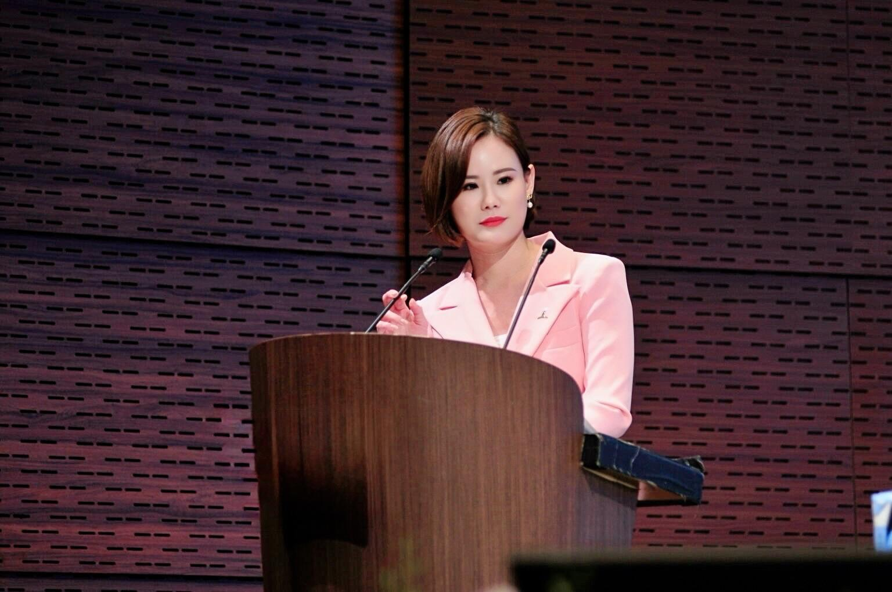
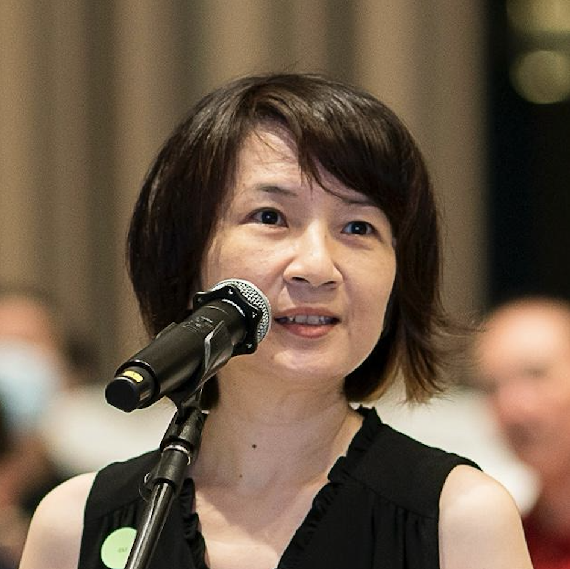
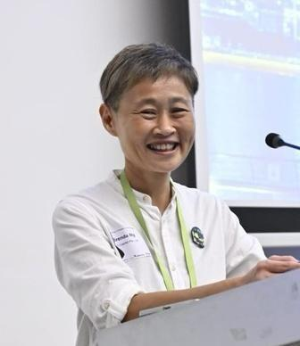

Behind
Second
Room

Founded by Grace Chen, a strategist with nearly two decades of experience in investor relations and capital-markets communication, Second Room draws on her work with boards, C-suites, and leading global investors — from sovereign wealth funds to major asset managers across Asia, Europe, and the U.S.
As former Head of Group Investor Relations at CapitaLand Investment (CLI), one of Asia’s largest listed real-asset managers with over S$110 billion in AUM, Grace led the Group’s IR function from 2018 to 2025, shaping how the company engaged investors through major milestones — including the S$11 billion Ascendas-Singbridge merger and the 2021 listing of CLI.
The Second Room Circle
A circle of senior practitioners who bring institutional, governance and investor perspectives into how Second Room advises.
David Lum
Equity Research &
Market Insights
David Lum has more than 25 years' experience as a sell-side equity analyst covering the Singapore market. Prior to retiring in December 2023, he was Head of Singapore Research at Daiwa Capital Markets. He has covered Singapore banks since the mid-1990s and Singapore REITs since the sector's inception in 2002. David has been a CFA charterholder since 1998 and holds a Bachelor of Science in Mechanical Engineering from the Massachusetts Institute of Technology.
Expertise
David brings the institutional investor lens into the room — stress-testing valuation assumptions, performance expectations, and capital-market framing before they reach the street.
Uantchern Loh
Stakeholder Communications,
Governance & Sustainability
Uantchern Loh has close to four decades of experience across stakeholder communications, corporate governance and sustainability, with early career grounding in enterprise risk management and cybersecurity serving clients across Asia Pacific. He previously served as the founding Chief Executive of the Singapore Accountancy Commission, leading national efforts to develop Singapore as a global accountancy hub. Since 2016, he has advised businesses on stakeholder communications and sustainability, integrating governance discipline, strategy and technology into clear and accountable corporate narratives. He currently serves as Non-Executive Chairman, Black Sun Global (Asia Pacific).
Expertise
Uantchern ensures the capital narrative is aligned with governance discipline — embedding sustainability logic, accountability and long-term value creation into investor-facing strategy.

Chuo Cher Shing
Legal, Governance &
Board Matters
Cher Shing has over 14 years of experience in corporate legal advisory and governance for Singapore-listed entities, with professional experience across CapitaLand Investment Group, Overseas Union Enterprise Limited and Mapletree Investments Pte Ltd. At CapitaLand Investment Group, she served as Company Secretary of CapitaLand China Trust (2017–2025) and as Vice President, Legal, advising boards and senior management on corporate governance, SGX listing rules and disclosure obligations, and supporting complex corporate actions and transformative transactions. Cher Shing is admitted as an Advocate and Solicitor of the Supreme Court of Singapore, holds an LLB from the National University of Singapore and is a member of the Singapore Academy of Law and the Singapore Institute of Directors.
Expertise
Cher Shing brings legal precision to high-stakes capital moments — strengthening disclosure readiness, governance framing and board-level resilience under scrutiny.

Brenda Ng
Investor Relations
Brenda Ng has over 15 years' experience as a investor relations and communications professional in stakeholder engagement, capital markets communication and sustainability initiatives. She combines strategic thinking with clear, human-centred communication to translate complex financial and ESG issues into meaningful dialogue. In addition, she designs and facilitates workshops for diverse communities, and serves as a forest school coach guiding experiential, nature-based learning.
Expertise
Drawing on in-house experience, Brenda understands the nuances behind investor and stakeholder engagement, and helps shape communication that is both credible and grounded in context.